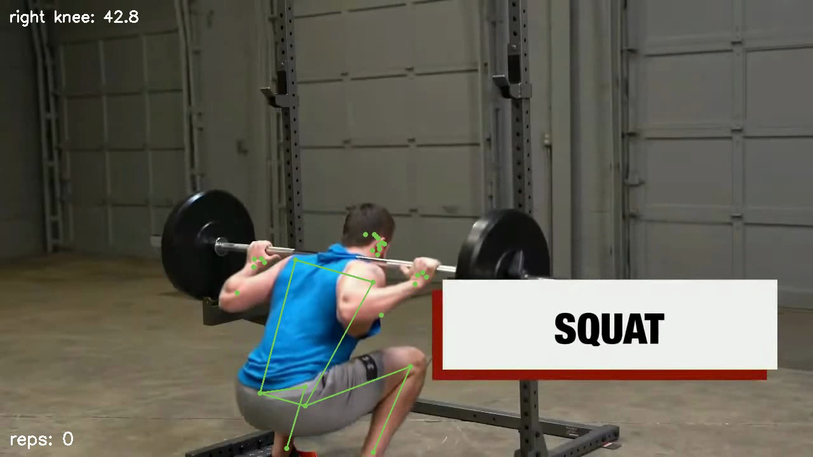
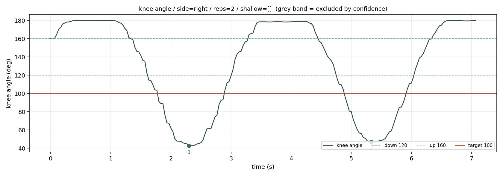
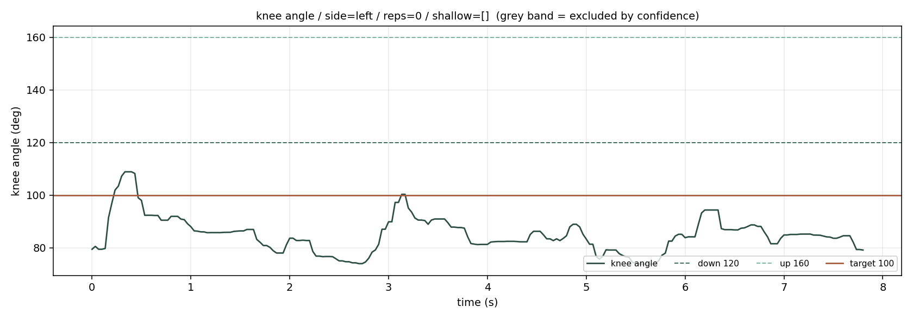
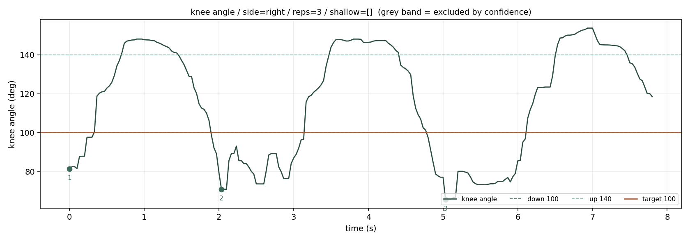

관절 좌표
프레임마다 좌표와 신뢰도. 신뢰도를 못 넘은 관절로는 각도를 계산하지 않음
도구가 아니라 업무에서 출발했습니다
자세 추정 · 노트북 로컬 실행 · 회원 영상을 밖으로 보내지 않음

업무 유형 · 검사와 판독
숙련 지도자 한 명의 판정 정확도를 도구가 넘기는 어렵습니다. 도입 근거를 정확도로 잡으면 대개 도입할 값이 없다는 결론이 나옵니다.
아쉬탕가·아헹가·빈야사가 같은 자세를 다르게 판정합니다. 판정 기준이 사람마다 다른 일은 학습시킬 정답도 채점할 방법도 없습니다.
해결 → "옳고 그름"이 아니라
"측정 가능한 값"으로 좁힌다
✕ 정렬이 맞는가
○ 무릎 각도가 90°±15° 안인가
잘못된 교정 지시는 부상으로 이어집니다. AI가 들어갈 자리는 최종 판정이 아니라 후보를 좁혀 사람에게 넘기는 앞단입니다.
해결 → 지시가 아니라 표시
✕ "무릎을 더 굽히세요"
○ "3·7회차가 목표에 못 미침"
→ 지도자가 확인
성공 기준을 만들기 전에 적었습니다. 정답도 모델을 돌리기 전에 적었습니다.
프레임마다 좌표와 신뢰도. 신뢰도를 못 넘은 관절로는 각도를 계산하지 않음
엉덩이·무릎·발목 세 점. 보이는 좌표만 쓰고 추정된 깊이는 쓰지 않음
내려감·올라옴 각도를 따로 둠. 하나면 경계에서 한 번이 여러 번이 됨

한쪽 다리 스쿼트에서 0회가 나왔습니다. 정답은 3회입니다.

auto가 고른 왼다리의 신뢰도. 가장 잘 보이는 다리입니다.
그런데 61°~129° — 끝까지 펴지지 않아 판정에 쓸 수 없습니다실제로 필요했던 오른다리의 신뢰도. 더 낮습니다.
60°~154° — 이쪽이 동작을 담고 있습니다반복 : 0회마지막에 내려간 채로 영상이 끝났습니다그 회차는 세지 않았습니다
S2를 평가하려면 대상이 있는 자료가 필요합니다. 촬영 전에 몇 번째를 얕게 할지 적어 두면 그게 정답이 됩니다.
지금은 한 명만 봅니다. 병목이 동시 처리인데 정작 여러 명을 못 봅니다. 겹칠 때 누가 누구인지 유지하는 문제가 새로 생깁니다.
동작이 바뀌면 임계값을 다시 잡아야 합니다. 모델 교체로는 해결되지 않습니다.
이 PoC가 내린 판단
된다두 다리 스쿼트 계열 단일 동작으로 한정하면 구축 대상 (8/8회 일치)
먼저여러 아사나로 넓히려면 아사나별 임계값 표부터
먼저얕은 회차 판정까지 가려면 대상이 든 자료부터
남음판정 항목을 좁히면 노트북에서 도는 작은 모델로 충분하다